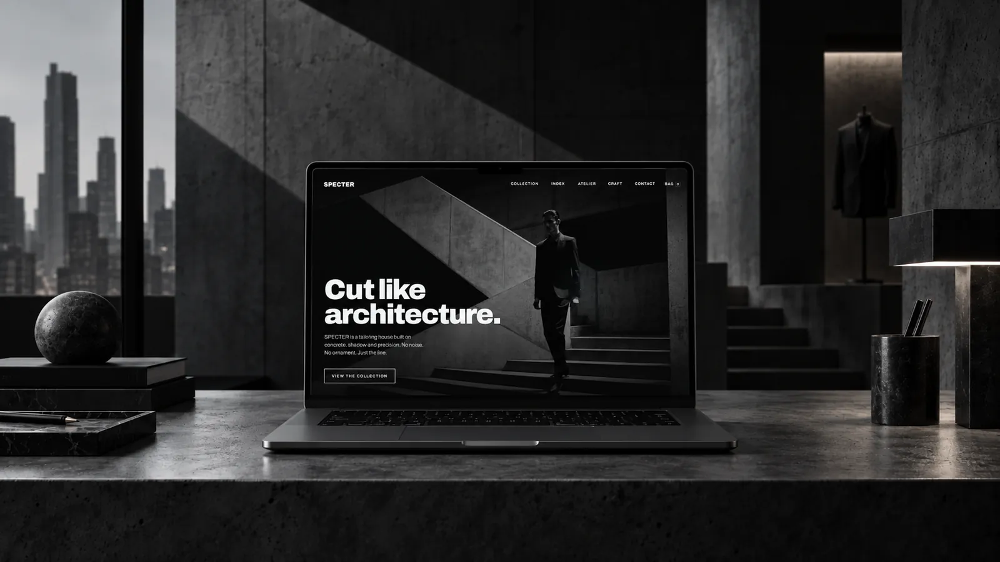
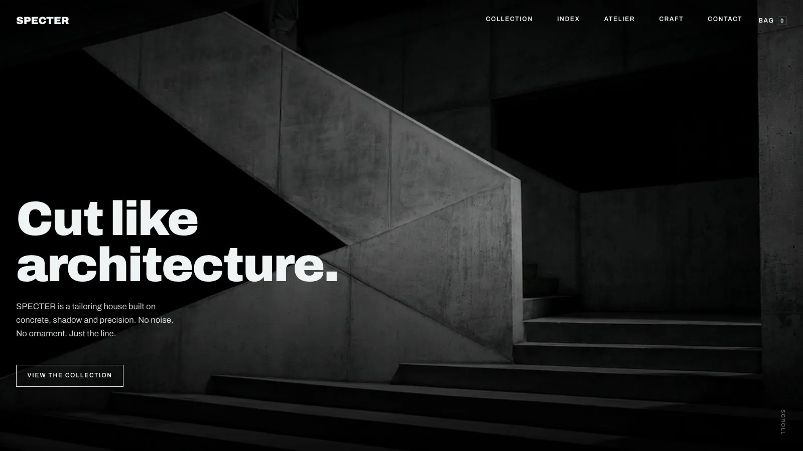
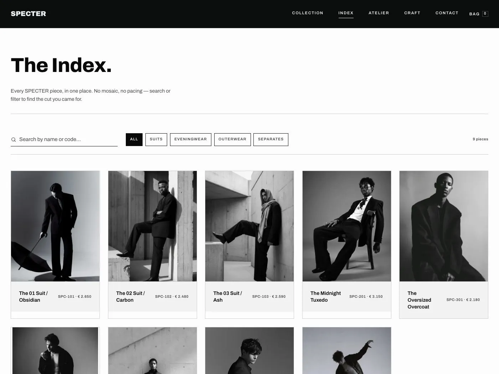
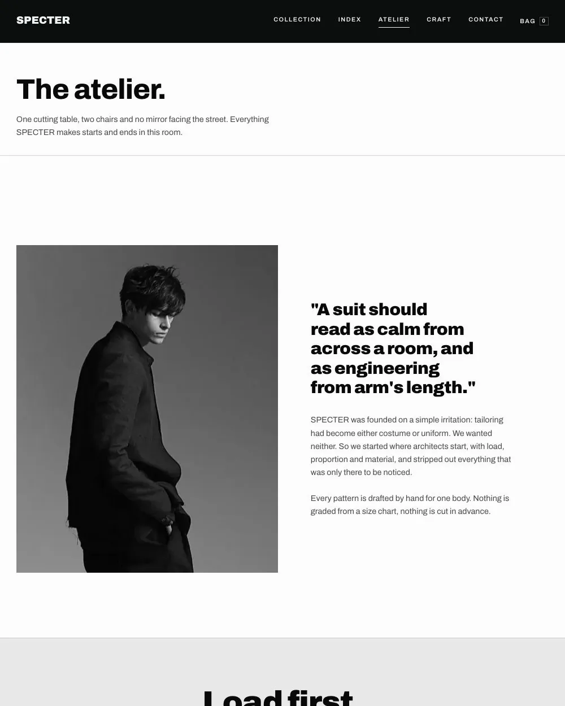

Webshop
Specter
Een webshop voor een maatkleding-atelier in Antwerpen: negen stuks, geen rek, alles op afspraak.

01Uitdaging
Specter verkoopt niets van het rek. Negen stuks, elk op maat gezet in een privéfitting. De site moest dat voelbaar maken in plaats van het te verstoppen achter een standaard webshop.
02Aanpak
Beton, schaduw en precisie in plaats van productcarrousels. Elk stuk krijgt één pagina, één maatkeuze en de keuze tussen een fitting aanvragen of meteen bestellen.
03Resultaat
Een winkel die van ver rustig oogt en van dichtbij precies aanvoelt, net zoals de kleding.


